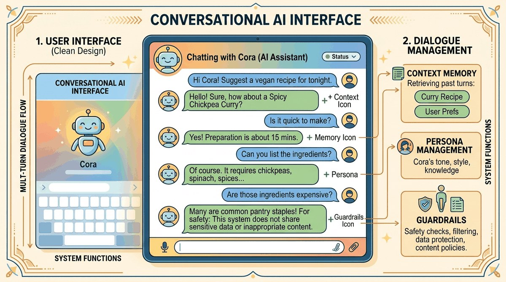

"The real problem is not whether machines think but whether men do."
Echo, Philosophically Inclined AI Agent
RAG (Chapter 32) handles a single question. Conversation handles many. This chapter is about the engineering of multi-turn dialogue: memory architectures, summarization, slot tracking, persona management, and the safety patterns specific to chat (toxic-input guards, jailbreak resistance, identity stability). The patterns here apply equally to customer-support bots and the persistent agents in Part VI.
Chapter Overview
When Replika rolled back its NSFW persona in February 2023, users posted grief threads for partners they had "spent years with"; the company reversed the change in weeks. When NEDA's eating-disorder helpline replaced humans with a chatbot named Tessa in May 2023, the bot told vulnerable callers to count calories and was pulled within five days. Both incidents are the same lesson: a conversational AI is not the model, it is the memory, persona, and guardrail stack wrapped around the model. Get that stack wrong and you make headlines for the wrong reason. This chapter is the engineering of multi-turn dialogue, including the persona, memory, and breakdown-recovery patterns that the ChatGPT-era assistants converged on.
This chapter covers the complete stack for building conversational AI. It begins with dialogue system architecture, contrasting task-oriented, open-domain, and hybrid approaches. It then explores persona design for companionship and creative writing applications, followed by memory and context management techniques that allow conversations to span sessions and retain important information over time. The chapter also addresses multi-turn dialogue patterns including clarification, correction, topic switching, and fallback strategies. Finally, it covers voice and multimodal interfaces that bring conversational AI beyond text.
By the end of this chapter, you will be able to design dialogue architectures for different use cases, implement persistent memory systems, build persona-consistent chatbots, manage complex multi-turn conversation flows, and integrate speech and vision capabilities into conversational applications, all while respecting safety and ethical guardrails.
Conversational AI brings together everything from prompt engineering to memory management to retrieval. This chapter teaches you to build multi-turn dialogue systems that maintain context, manage state, and deliver coherent user experiences, skills that connect directly to the agent architectures in Part VI.
The identity-stability failure mode has a canonical anchor in the Replika NSFW rollback (Feb 2023), when a sudden filter change left long-standing users grieving companions whose persona had shifted overnight: a vivid demonstration that persona consistency is itself a feature users pay for. The safety-of-personas counter-case is the NEDA Tessa chatbot incident (May 2023), where a wellness chatbot gave eating-disorder callers harmful weight-loss advice. The persistent-conversation engineering moment that closes the chapter's memory section is OpenAI's ChatGPT Memory feature (Feb 2024), which made cross-session persistence a default product capability rather than a research demo.
- Compare task-oriented, open-domain, and hybrid dialogue system architectures and select the right approach for a given application
- Design system prompts that specify persona, tone, guardrails, and behavioral constraints for conversational agents
- Implement dialogue state tracking and slot-filling mechanisms for task-oriented conversations
- Build persona-consistent chatbots with defined personality, voice, and backstory
- Design and implement short-term and long-term memory systems using sliding windows, summarization, and vector stores
- Handle multi-turn dialogue challenges including clarification, correction, topic switching, and fallback strategies
- Manage context window overflow through priority-based eviction and dynamic context budgeting
- Integrate speech-to-text, text-to-speech, and vision capabilities into conversational pipelines
- Evaluate conversational AI systems using both automated metrics and human judgment
Prerequisites
- Chapter 11: LLM APIs (chat completions, message formatting, system prompts)
- Chapter 12: Prompt Engineering (few-shot prompting, chain-of-thought, structured outputs)
- Chapter 32: Retrieval-Augmented Generation (embedding search, vector stores)
- Familiarity with Python async programming and web frameworks (FastAPI or Flask)
- Basic understanding of REST APIs and WebSocket connections
Sections
- 37.1 Dialogue System Architecture Every conversational AI system makes fundamental architectural decisions that shape what it can and cannot do. Entry
- 37.2 Personas, Companionship & Creative Writing Persona design transforms a generic language model into a specific character with consistent personality, voice, and behavior. Intermediate
- 37.3 Short-Term Memory Strategies Sliding windows and progressive summarization that keep recent conversation turns inside the context budget. Intermediate
- 37.4 Multi-Turn Dialogue & Conversation Flows Real conversations are messy. Advanced
- 37.5 Long-Term Memory: Vector, MemGPT & Profiles Long-term memory architectures: vector store memory, MemGPT/Letta self-managing agents, session persistence with user profiles, memory-as-a-service. Advanced
- 37.6 Memory Consolidation, Evaluation & End-to-End Memory consolidation patterns, evaluating memory quality with the right metrics, and an end-to-end example that wires short-term and long-term memory together. Advanced
Objective
Build a chatbot with three-tier memory (sliding window + summary + vector store) that genuinely remembers facts about you between Python sessions. By the end, you can close the terminal, reopen it next week, and the bot will recall your name, projects, and preferences without re-prompting.
Steps
- Step 1: Skeleton chat loop. Build a basic
while TrueCLI using GPT-4o-mini that keeps a list of{"role","content"}messages. No persistence yet. Confirm 5-turn conversations work and the context grows linearly. - Step 2: Sliding window + rolling summary. When the message list exceeds 20 turns, call the LLM to summarize turns 1 to 10 into one system message and drop them. Verify a 50-turn conversation still works without context overflow.
- Step 3: Fact extractor. After every user turn, prompt the LLM: "Extract any durable facts about the user (name, location, preferences, projects) from this turn. Return JSON list or empty." Append non-empty facts to
facts.jsonl. - Step 4: Vector memory store. Embed each fact with
text-embedding-3-smalland persist inchromadbas./memory_db/. On every new user message, query top-5 relevant facts and inject them as a "What I remember about you:" system message. - Step 5: Session persistence test. Run the bot: tell it your name, your job, your dog's name, and that you hate cilantro. Close Python. Open a new session. Ask: "What do you remember about me?" It should recall all four without prompting.
- Step 6: Consolidation pass. Add a nightly job: load all facts, ask the LLM to deduplicate and merge (e.g., "user is a data scientist" + "user works at Acme" -> "user is a data scientist at Acme"). Re-embed and replace. Measure memory size before/after.
- Step 7: Library shortcut. Re-implement in
mem0(~10 lines:m = Memory(); m.add(user_input, user_id="me"); m.search(query)) and compare recall quality. The from-scratch version teaches the three-tier architecture; mem0 is what ships.
Expected Output
Expected time: 3 to 4 hours. Difficulty: intermediate. Artifact: a persistent chatbot with measurable cross-session recall.
What's Next?
Next: Chapter 40: Voice and Realtime Multimodal Assistants. Text chat is one mode. The next frontier is what happens when latency drops below 300ms and the modality becomes speech, vision, or both. Chapter 40 covers ASR-to-TTS pipelines, native speech-to-speech models, realtime APIs (OpenAI Realtime, Gemini Live), turn-taking, barge-in handling, and the voice-AI orchestration frameworks (LiveKit, Vocode, Pipecat) that make a 24/7 phone agent actually feasible.